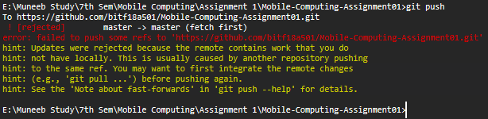
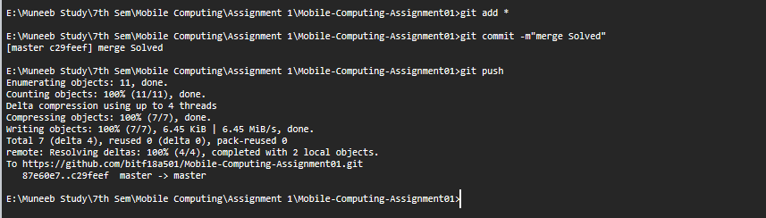
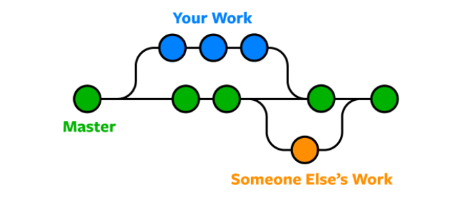

Name Your Repository
You can give your repository any name. An account cannot have two repositories with same name.
Create Your Repository
After Setting up your Repository privacy Either Public or Private click on Create Repository.
Now copy this link.
Now your repository is created and the link to your repository is generated. Copy this generated link.
Clone Your Repository
After Creating your repository clone it in your personal computer.
Type "Git clone" in your command prompt and paste the copied link.
Press Enter.
After Cloning your Repository, You can see a folder named as your repository in the location you opened your command prompt.
Create a new Folder in your New repository.
I created a HTML file that has the content as shown in the picture given.
Using Git Add Command.
The git add command adds a change in the working directory to the staging area. It tells Git that you want to include updates to a particular file in the next commit. However, git add doesn't really affect the repository in any significant way—changes are not actually recorded until you run git commit .
Using Git Commit Command.
The git commit command is used to move files from the staging area to a commit. This command is run after git add, which is used to add files to the staging area. git commit creates a snapshot of the changes made to a Git repository which can then be pushed to the main repository when the developer is ready to do so
Using Git Push Command.
The git push command is used to upload local repository content to a remote repository. Pushing is how you transfer commits from your local repository to a remote repo. It's the counterpart to git fetch , but whereas fetching imports commits to local branches, pushing exports commits to remote branches.
First Commit on Github.
Thats How your Commits look on github. Here We can see our first commit with the message "First Commit" as we typed in our commit command.If you click on "First Commit" in the red box. You can see the content upload to the commit.
Content of the File.
This content is uploaded from our local repository to the github.

Edit Online
When You are in a branch you can edit a file on your online Repository by clicking on the edit button as shown in the Picture.
Branches are Explained below i=on this page.
Committing Changes on Github.
When you commit on github it saves your repository state. Just like it does on your local Repository.
Pull Command
Just like, when we commit a change in our local repository, we have to use push command to save changes onto our github repository,We use pull command when we make a change in our github reposirtory in order to bring committed changes to our local repositories.
Pulling Changes from Github.
The changes on line number 8 was made online on github and was pulled into our local repository using git pull command

Merge Problem Shown
When you make a change in your local repository and someone makes a change on online there occurs a merge conflict.As Shown Above in the Picture.
Local Changes
Line Number 8 was changed locally as shown.
Online Changes
Line Number 8 was changed online as shown.
Using Pull.
IDE gave us a hint to use Git Pull Command to resolve the conflict.So here we used pull command.
Pulled Change
The changes we made online show in our ide when we used git pull

Merge Problem Solved
After Pulling changes from Online repository into our local, we made a new commit and pushed it as shown in the picture.

Branching Use and Example
Here's an example of how Git branches are useful. Let's say you need to work on a new feature for a website. You create a new branch and start working. You haven't finished your new feature, but you get a request to make a rush change that needs to go live on the site today. You switch back to the master branch, make the change, and push it live. Then you can switch back to your new feature branch and finish your work. When you're done, you merge the new feature branch into the master branch, and both the new feature and rush change are kept!
Checkout branch.
Creating a branch using git checkout.
Checking which branch our head is at.
The branch we are heading is showning in green color with a asteric